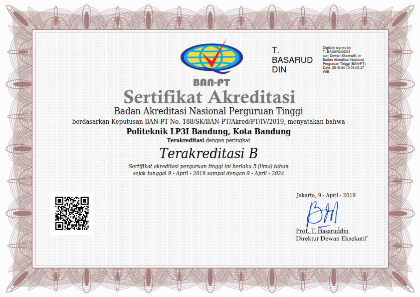

Politeknik LP3I Bandung
Adanya kesenjangan atau ketidakserasian antara pendidikan dengan dunia kerja merupakan masalah yang telah diantisipasi dan teratasi oleh Lembaga Pendidikan dan Pengembangan Profesi Indonesia (LP3I) sejak berdirinya pada tanggal 29 Maret 1989. LP3I memiliki prinsip dasar pendidikan yaitu harus dapat memenuhi tuntutan dan kebutuhan dunia kerja. Melihat keberhasilan model pendidikan yang dijalankan oleh LP3I, animo masyarakat pun semakin besar. Peserta didik bukan hanya penduduk ibukota dan kota-kota besar saja, bahkan dari beberapa daerah yang cukup jauh. Oleh sebab itulah, LP3I membuka kampus-kampus di hampir setiap ibukota propinsi.
Kini LP3I memiliki kampus yang tersebar di setiap propinsi dan kiprah LP3I semakin diakui oleh masyarakat luas. Pengakuan dari dunia industri tercemin dari semakin banyaknya perusahaan yang merekrut lulusan LP3I. Sedangkan pengakuan lain datang dari dunia pendidikan dalam dan luar negeri melalui kerjasama transfer kredit dan konversi mata kuliah.
POLITEKNIK LP3I Bandung dengan nomor pendirian sesuai SK Mendiknas No.199/D/0/2001 merupakan salah satu lembaga pendidikan tinggi yang bernaung di bawah bendera LP3I Grup. Kiprahnya dihadirkan sebagai kelanjutan program Profesi yang telah hadir kokoh di dunia pendidikan Indonesia selama kurang lebih 17 tahun.
Selama kurun waktu ini telah ribuan lulusan memenuhi kebutuhan dunia industri atau kerja. Posisi-posisi yang strategis pun telah mulai dimasuki lulusan LP3I program pendidikan profesi 2 tahun.
Lalu, kebutuhan akan studi lanjutan mulai dirasakan sebagai antisipasi pergeseran jenjang karir yang tentunya harus diselaraskan dengan peningkatan jenjang pendidikan. Paradigma ini menginspirasi LP3I untuk membuka POLITEKNIK LP3I yang dimulai di Bandung, selanjutnya di Jakarta dan di Medan.
POLITEKNIK LP3I tentunya harus tetap dalam pakemnya, yaitu sebagai payung dari program LP3I sebelumnya. Karena itu, format dasarnya harus selalu mengacu pada terbentuknya calon sumber daya manusia unggul yang siap memasuki dunia kerja, bukan yang siap untuk dilatih kerja. Dengan format ini maka dilahirkanlah bentuk Politeknik dengan pondasi keahlian atau “Vocational based Polytechnic” yang memungkinkan mahasiswa/lulusan POLITEKNIK LP3I dapat mudah diterima dunia kerja sebagai tujuan akhir dari seluruh proses pendidikan.
Dengan format “Vocational based Polytechnic”, maka POLITEKNIK LP3I memproyeksikan mahasiswanya dengan standar:
AKREDITASI INSTITUSI
B (BAIK SEKALI)
SK BANPT : 188/SK/BAN-PT/Akred/PT/IV/2019
Program Studi